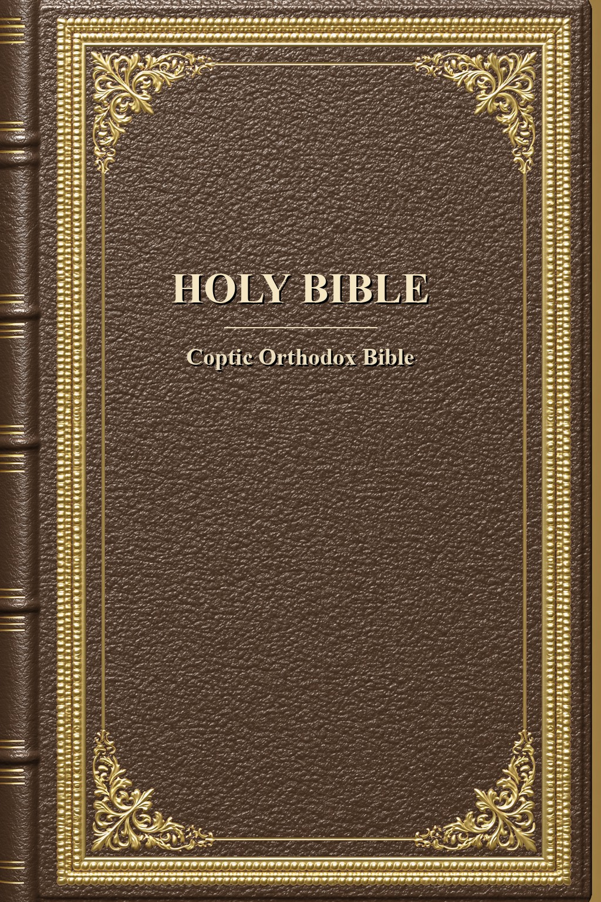

Downloads
The beta is live — free, runs on your own computer, no account, no tracking.
Download the ready-made Ethiopian Tewahedo Study Bible below, or the desktop app to build your own editions. This is an early release, refined with every version — your feedback shapes what comes next.
Read the Bible — Choose Your Edition
The full Ethiopian Tewahedo Study Bible leads — the 83-book canon with the complete study apparatus (over 91,000 notes: cross-references, manuscript witnesses, commentary, word studies, topical indexes and more) and original-language popups (Hebrew, Greek, Latin, Arabic). Beside it stand eight more ready-made study editions — Catholic, Reformed, Jewish, academic, Eastern Orthodox, Anglican, Lutheran, and Coptic — each wearing its own cover from the program's twenty-five designs. One file each, free to read, copy, and share. No app required — every edition opens in any e-reader.
Pick your edition, then the device you read on.
Catholic Study Bible
Reformed Study Bible
Jewish Study Tanakh

Annotated Scholar's Bible
Eastern Orthodox Bible
Anglican Study Bible
Lutheran Study Bible

Coptic Orthodox Bible
On a Kobo, sideload the .kepub.epub — it turns on the tap-to-read footnote popups. On Apple Books and most other readers, use the plain .epub.
Verify any download against the release's SHA256SUMS.txt.
Get the build
Latest
v0.1.0 — The Readable-Notes & E-Reader Release
The desktop builder app is v0.1.0, for Windows, macOS, and Linux. Choose your system:
Windows installer (.exe) macOS (.dmg) Linux (x86_64 .AppImage)
Every build is listed here, newest first. The Windows build is code-signed and the macOS build is notarized by Apple; the Linux AppImage is x86_64 (on ARM, run from source). Step-by-step install instructions for each system are in the Guide.
What’s changed
v0.1.0 — Notes That Read Like a Book, the Illuminated Look & a Native macOS Window
- A redesigned study-note popup. Tap a verse’s ◈ badge and the notes now cascade — gathered under a heading and symbol for each category (with a thin coloured spine down its edge), each source named once as a byline, the notes indented beneath, and all the topics merged into one line at the end — instead of one long, repetitive list. Nothing is dropped; every distinct point is kept.
- Tidier notes throughout — repeated attributions and category prefixes are de-duplicated (losslessly), and Nave’s and Torrey’s topical indexes are merged into one clean list.
- A new illuminated-manuscript look for the desktop app — vellum and ink, a gold-ruled banner, gold buttons, serif type — so the program now matches the website.
- On macOS, the app now opens in its own native window (its own icon and dock entry), instead of opening a browser at a localhost address.
- Built for real e-readers. Every book’s title page now owns its own page (its own file inside the EPUB — the one page break every reader honours); chapter numbers are centred and never strand alone; note badges sit at the end of their own verse; popup text carries its own separators so it stays readable even in Kobo’s plain-text preview; and a companion font pack lets a Kobo render Hebrew, Greek, Geʽez, and Arabic in its popups.
- Still a beta on the 0.x track — an early, complete build, with your feedback wanted.
v0.0.3 — The Full Study Bible + Device-QA Fixes
- The complete apparatus: every category of study note is now on — over 91,000 notes and all original-language popups (Hebrew, Greek, Latin, Arabic).
- Chapter-start titles (Psalm superscriptions such as “A Prayer of David”) now read as headings, not as verse text.
- Additions that aren’t separate books — the Greek additions to Daniel, and the empty “Additions to Esther” — are folded into their book or removed; books are numbered cleanly, with no gaps.
- The in-book contents always shows each book with its chapter links; cleaner book titles (no “or …” alternates).
- Justified note text; repeated notes de-duplicated; tidier front matter (no blank pages; the colophon fits one screen).
v0.0.2 — Earlier Device-QA Pass
- Distinct note markers (a ◈ symbol with a count); note popups grouped by category; justified, reader-adjustable text; centred book title pages; a book-level reader table of contents; a Kobo
.kepub.epubvariant for the footnote popups.
Verify your download
Every release is published with a SHA-256 checksum for each file, in a
SHA256SUMS.txt posted alongside the downloads. Comparing the checksum confirms your copy
downloaded completely and wasn’t altered in transit — it matches the file posted here. (It proves
integrity, not authorship; that is what code-signing adds.)
How to check
- Windows:
certutil -hashfile YHWH-0.1.0-windows-x64.exe SHA256 - macOS:
shasum -a 256 YHWH-0.1.0.dmg - Linux:
sha256sum -c SHA256SUMS.txt
The published SHA256SUMS.txt for v0.1.0 is posted with the
release — download it here.
Prefer to run from source?
The code is source-available — you may read it and run it yourself. With Python 3.14+ installed, clone the repository and launch the program directly, with no installer at all. The exact clone command and run instructions live with the source.
Source-available means the code is open to read and run; it is not released under an open-source license (it remains © 2026 Bogdan Zorlescu, all rights reserved).
Feedback
Found a bug, something confusing, or a passage or attribution that looks wrong? Leave a note on the feedback page, or email gringo.boggy@yhwhyaway.com — every report is read.